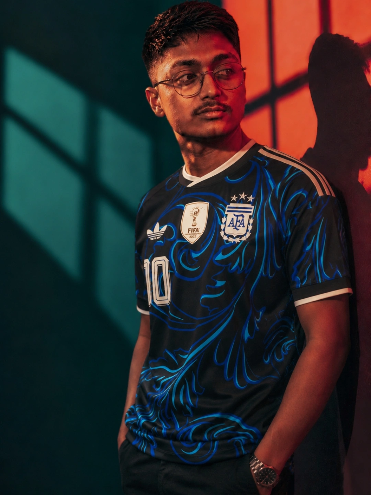
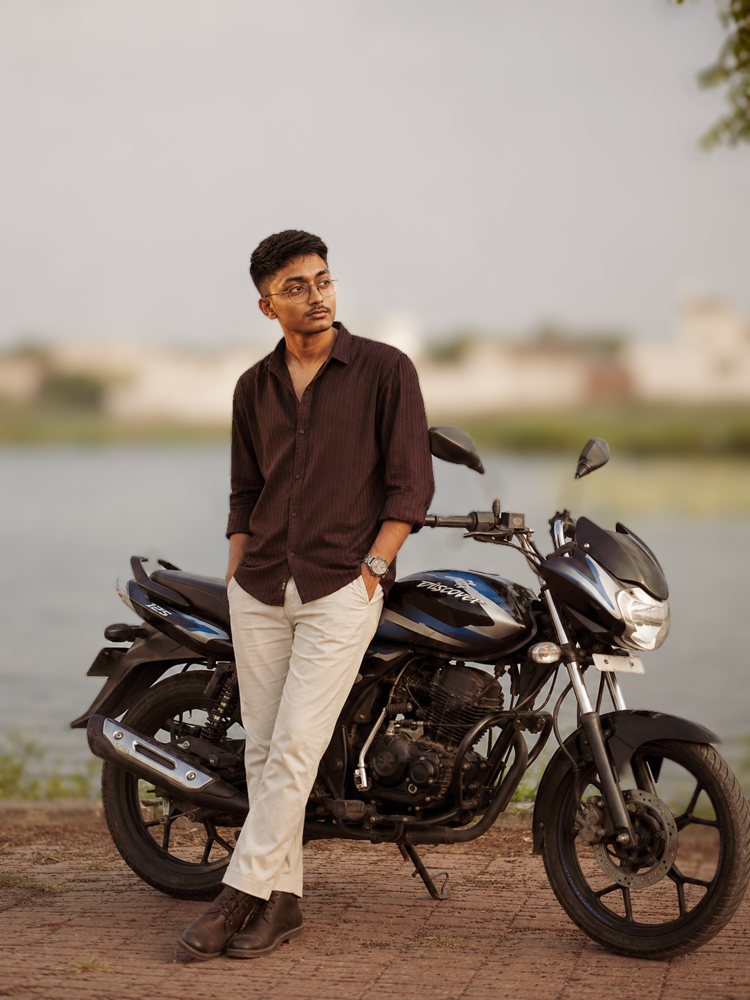
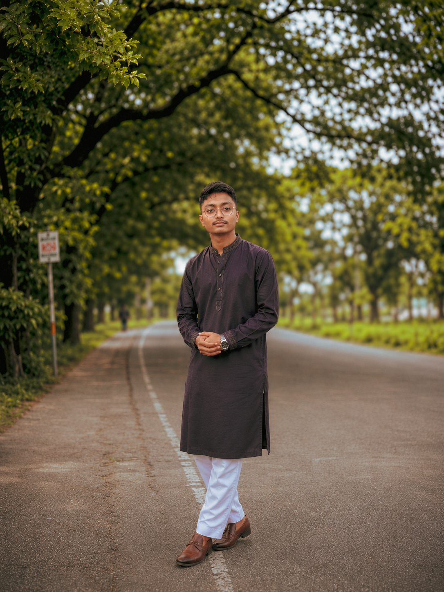

2019
PSC District Topper
Faridpur District Topper, PSC 2019.
Milestone 01

Hello, I'm
Student Developer · Self-Taught Programmer · Aspiring Full Stack Engineer
"Turning ideas into reality through code."
Connect with me
Quick Facts
About Me
I'm Abir Arafat Chawdhury, a student developer and self-taught programmer from Faridpur, Bangladesh. I'm introverted, drawn to silence, deep thinking, technology, code and music.
My journey started in Class 6 on my father's laptop. Curiosity became passion, passion became purpose. Coming from a middle-class family taught me resilience and discipline — every challenge has sharpened my ambition to become a Full Stack Software Engineer and build my career in the United States.
Committed to long-term goals over short wins.
Dreaming big and engineering my way there.
Turning ideas into shippable software.
Honoring every person and lesson along the way.
Chapter 01
"When I first touched a computer, the world quietly shifted."
I was a Class 6 kid in Faridpur. My father's laptop sat on the table like a closed door — and one afternoon, I opened it.
Lines of HTML on a black screen. The browser blinked back at me. Something I typed had appeared. From that moment, curiosity quietly became the loudest voice in my head.
Live Age
Born Friday, 17 April 2009 — Faridpur, Bangladesh.
0 seconds alive
Chapter 02
"Discipline is what curiosity grows up to become."
Self-taught means nobody hands you a roadmap. You stumble, you Google, you try again at 2 AM with tea going cold beside you.
Python, FastAPI, async bots, Linux servers — each one started as a wall and slowly turned into a door. The wins were small, but they compounded.
Chapter 03 · On Stage
"A microphone, an audience, and the joy of having something meaningful to say."
Public speaking has been one of my earliest passions and a meaningful part of my personal journey. Standing in front of an audience, holding a microphone, and expressing my thoughts has always given me a unique sense of excitement.
Chapter 04 · Introvert by Nature
I have always considered myself an introverted person, and honestly, I have learned to love this part of my personality. People sometimes misunderstand my silence — but the truth is quite different.
I am not silent because I have nothing to say. I am silent because I have learned that not everything deserves a response.
Chapter 05 · Unseen Struggles
I never imagined that, at just seventeen, I would already have to deal with so many challenges concerning my health and well-being. From the outside, I may appear perfectly fine. But behind that ordinary appearance, there are struggles I rarely talk about.
Some battles are fought without an audience, without applause, and without anyone knowing how difficult they are.
Mine is one of them.
The Autobiography
21 stories in my own words · 44 minutes of reading. Swipe through and open any chapter.
Portraits & Moments
My Learning Map
No vanity numbers. This is where I actually stand — and where I'm still climbing.
Code Philosophy
I don't code to impress people.
I build software that solves problems.
$ ship_value > show_off
$ readable > clever
$ done > perfect
Featured Work
github.com/abirxdhack/SmartNoteWeaver
Automated LaTeX-powered educational note generator producing professional PDFs across subjects.
github.com/abirxdhack/GithubBot
Telegram bot for GitHub integration: webhooks, secure tokens, repo monitoring & automation.
github.com/abirxdhack/SmartLiveGram
Private live-chat forwarding system between users and owner through a Telegram bot.
github.com/abirxdhack/CodeUtilBot
Advanced async Telegram bot for Python hosting, API integration, automation & file management.
github.com/abirxdhack/A360API
Open-source asynchronous FastAPI framework built on custom libraries. Under active development.

I Believe In
Every day is a chance to ship a better version of myself. I don't chase perfection — I chase consistent, compounding progress.
Achievements
A short timeline of the wins, scholarships, and shipped work that shaped the journey so far.
Faridpur District Topper, PSC 2019.
General Grade Scholarship recipient.
Offered admission at Faridpur Zilla School.
First lines of code on my father's laptop.
Earned 1,600 BDT from my first paid project at 17.
Multiple production-ready repos shipped publicly.
Education
2019 · GPA 5.00
District Topper + Scholarship
2022 · GPA 5.00
Science track
2025 · GPA 4.94
Science group
2027 (running) · Second Year
HSC Candidate

@abirxdhack
Entrepreneur, programmer, web developer and open-source builder creating practical software for real users.
Repositories, audience, stars
Public Repos
Followers
Following
Total Stars
Total Forks
Since
github-stats-alpha
Public Repos
Followers
Following
Total Stars
Total Forks
Since
github-readme-stats
github-readme-activity-graph
github-readme-streak-stats
Consistent Builder
Public work, Telegram bots, APIs and open-source learning continue across the journey.
github-profile-trophy
Open Source
Stars
Repos
Builder
highest-impact public work
Live Insights
Every visit to my story, counted live. Days follow Bangladesh time, and no names or personal details are ever stored.
Value 01
Success isn't built overnight — it's built every night.
Value 02
Showing up beats showing off. Every single day.
Value 03
The questions I ask today become the code I write tomorrow.
Production open-source projects.
Self-taught since Class 6.
Bangla, English, Hindi.
Always learning, always shipping.
My Dream
My Future
Building open source, learning every day.
Building open source, learning every day.
Finish HSC with strong results.
Finish HSC with strong results.
Pursue Computer Science with scholarship.
Pursue Computer Science with scholarship.
Ship products at world-class companies.
Ship products at world-class companies.
Relocate and build a global career.
Relocate and build a global career.
Maintain libraries the world depends on.
Maintain libraries the world depends on.
Bring up the next generation behind me.
Bring up the next generation behind me.
Personal Manifesto
Learning never ends.
Consistency beats motivation.
Every bug teaches something.
Open source changes lives.
Failure is feedback.
Thoughts
A small editorial — featured story, sharp insight, latest entry and a quote I keep coming back to.

Featured StoryIt wasn't a single moment — it was a thousand small ones stacked on top of each other until the choice felt obvious.
Jun 02, 2026 · 8 min read
Every bug, every rejection, every late night that didn't work taught me how to keep showing up.
Apr 25, 2026 · 4 min read
Keep writing,
keep growing,
keep inspiring.
Abir
Why I trade quick wins for compounding habits — and how it's shaping the engineer I'm becoming.
May 12, 2026 · 5 min read
Writing Stats
Languages
Personality
"Progress comes from consistency, curiosity and continuous learning. Every line of code is another step toward meaningful impact."